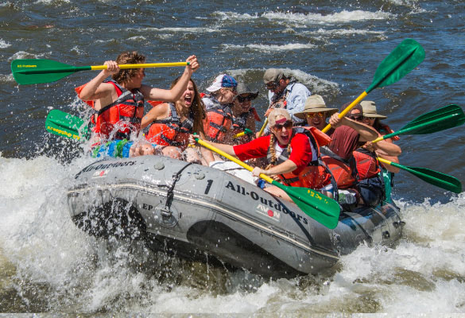

Rafting and whitewater rafting are outdoor entertainment activities that use a boat or an unsinkable raft. It has different difficulty levels according to the current of the water in which the sport is done. It can be done solo but is more commonly done with groups and needs good teamwork to manage the water.
History
During the turn of the century, a new type of business sprung up in the Lehigh Gorge. A resort was built in Jim Thorpe along the Lehigh River. The 47 room Hotel Wahnetah was a perfect getaway for people in Northeastern United States. The hotel prided itself on the beautiful hike to the Glen Onoko falls which became nearly as popular as Niagara Falls at the time.

The beauty of the hotel was short- lived. In 1911 it burned down in a major forest fire. The falls and their beauty still remain there and can be seen on hikes through this area. There are even remains of stone steps and foundations of old building
Adventure Awaits You


